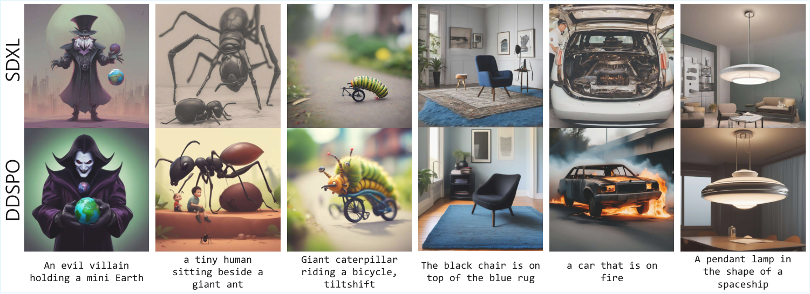

Diffusion models have achieved impressive results in generative tasks such as text-to-image synthesis, yet they often struggle to fully align outputs with nuanced user intent and maintain consistent aesthetic quality. Existing preference-based training methods such as Diffusion Direct Preference Optimization help address these issues, but obtain their supervision targets from the forward process q(xt-1|xt,x0) derived from terminal samples, which is not directly aligned with the model's actual backward denoising transitions at each step. In this work, we introduce Direct Diffusion Score Preference Optimization (DDSPO), which defines stepwise preference supervision directly over backward denoising transitions through a contrastive policy pair, rather than relying on forward-process approximations from terminal samples. We propose two practical instantiations of the contrastive policy pair: training separate winning and losing models on preference data, and inducing a contrastive policy pair without additional training by using a pretrained reference model conditioned on an original prompt and a semantically degraded variant, requiring neither reward modeling nor manual annotations. Empirical results show that contrastive-policy-pair supervision is more effective than forward-process-based supervision across text–image alignment and aesthetic-quality tasks.
Diffusion DPO obtains its supervision targets from the forward process q(xt-1|xt,x0) derived from terminal samples (x0w, x0l) — a surrogate that does not match the model's actual reverse denoising process at inference. DDSPO instead defines preference directly over backward denoising transitions: at every timestep t it contrasts the denoising scores of a contrastive policy pair — a winning policy and a losing policy — and optimizes the model toward the preferred score target ε⋆w and away from the dispreferred one ε⋆l. This yields dense, transition-level supervision across the denoising trajectory rather than a single signal on the final sample.
We propose two complementary ways to instantiate the contrastive policy pair:
The type of prompt degradation is task-specific: random token removal for text–image alignment, and LLaMA-based rewriting for aesthetic quality.
On SD-1.4 with identical TF-CPP-constructed preference data, CPP-based supervision outperforms forward-process baselines; replacing DSPO's forward-posterior targets with CPP targets (DSPO+CPP) also helps, showing the benefit is not specific to the DPO objective.
| Model | GenEval↑ | CompBench↑ | FID↓ | IS↑ |
|---|---|---|---|---|
| SD-1.4 | .4245 | .3150 | 13.05 | 36.76 |
| +D-DPO | .4841 | .3723 | 18.02 | 36.64 |
| +DSPO | .4841 | .3793 | 18.28 | 35.87 |
| +DSPO+CPP (Ours) | .4978 | .3854 | 17.12 | 37.47 |
| +DDSPO (Ours) | .5045 | .3823 | 16.39 | 38.10 |
Comparison of preference-optimization methods on SD-1.4 (same TF-CPP data).
DDSPO improves text–image alignment consistently across UNet- and DiT-based backbones.
| Model | GenEval↑ | CompBench↑ |
|---|---|---|
| SD-1.4 | .4245 | .3150 |
| +DDSPO | .5045 | .3723 |
| SDXL | .5229 | .4034 |
| +DDSPO | .6049 | .4857 |
| SANA | .6812 | .4846 |
| +DDSPO | .7266 | .5255 |
| SD3-M | .7123 | .5155 |
| +DDSPO | .7384 | .5740 |
DDSPO across diverse backbones (TF-CPP).
Under matched Pick-a-Pic supervision (DD-CPP), DDSPO improves over Diffusion-DPO; without any human-annotated data (TF-CPP) it remains competitive with supervised methods.
| SD-1.5 | Data | HPSv2↑ | PickScore↑ |
|---|---|---|---|
| SD-1.5 | – | 26.95 | 21.14 |
| +D-DPO | Pick-a-Pic | 27.25 | 21.34 |
| +D-KTO | Pick-a-Pic | 27.89 | 21.39 |
| +SPO | Pick-a-Pic | 27.50 | 21.41 |
| +DDSPO | Pick-a-Pic | 27.60 | 21.50 |
| +DDSPO | None | 27.46 | 21.35 |
| SDXL | Data | HPSv2↑ | PickScore↑ |
|---|---|---|---|
| SDXL | – | 27.89 | 22.27 |
| +D-DPO | Pick-a-Pic | 28.55 | 22.61 |
| +MAPO | Pick-a-Pic | 28.22 | 22.30 |
| +SPO | Pick-a-Pic | 29.21 | 23.11 |
| +DDSPO | Pick-a-Pic | 29.09 | 22.71 |
| +DDSPO | None | 28.78 | 22.70 |
Aesthetic quality vs. SOTA (HPSv2 / PickScore).

SDXL vs. DDSPO (TF-CPP). Top row: SDXL; bottom row: DDSPO. Images are generated from the same prompts and random seeds.
@inproceedings{kim2026ddspo,
author = {Kim, Dohyun and Lyu, Seungwoo and Kim, Seung Wook and Seo, Paul Hongsuck},
title = {Direct Diffusion Score Preference Optimization via Stepwise Contrastive Policy-Pair Supervision},
booktitle = {European Conference on Computer Vision (ECCV)},
year = {2026}
}